Product Overview
Manual Strapping Kits provide a reliable and cost-effective
solution for securing packages, cartons, and bundled goods
without the need for powered machinery.
These kits typically include tensioners, sealers, cutters,
and compatible strapping, making them suitable for light to
medium-duty packaging applications.
Key Features
- Complete manual packaging solution
- Durable tools for consistent strapping tension
- No electricity or air supply required
- Easy to operate and maintain
- Suitable for warehouse and on-site use
Specifications
- Strap Type: PP / PET (varies by kit)
- Operation: Manual
- Components: Tensioner, sealer, cutter
- Usage: Light to medium-duty packaging
- Application: Bundling and securing goods
Applications & Use Cases
- Warehouses and distribution centers
- Logistics and transportation
- Manufacturing units
- Packaging and dispatch departments
- Small and medium-scale industries
Best Suited For
- Warehouses handling low to medium daily dispatch volumes
- MSMEs and traders requiring flexible, low-cost strapping
- On-site packing where power supply is unavailable
Selection Note
For Indian operating conditions, PP strapping is commonly
sufficient for cartons and light bundles, while PET strapping
is recommended for heavier loads. Proper tensioning technique
helps avoid strap breakage during transport.
Commonly Used Along With
- PP or PET Strapping Rolls
- Strapping Seals or Buckles
- Edge Protectors for cartons
Product FAQs
-
What is included in a manual strapping kit?
A typical kit includes a strapping tensioner, sealer, cutter,
and is used with compatible PP or PET strapping and seals.
-
Which strapping type should I choose – PP or PET?
PP strapping is suitable for cartons and light bundles,
while PET strapping is recommended for heavier or rigid loads.
-
Is a manual strapping kit suitable for warehouses?
Yes. Manual kits are widely used in Indian warehouses with
low to medium dispatch volumes where automation is not required.
-
Does the kit require electricity or compressed air?
No. Manual strapping kits operate without power or air supply,
making them ideal for on-site and remote packing locations.
-
How tight should the strap be during packing?
The strap should be tight enough to secure the load without
crushing cartons or damaging the product inside.
-
Can the tools handle continuous daily use?
Yes. When used correctly and maintained, manual strapping
tools are suitable for regular daily use in industrial settings.
 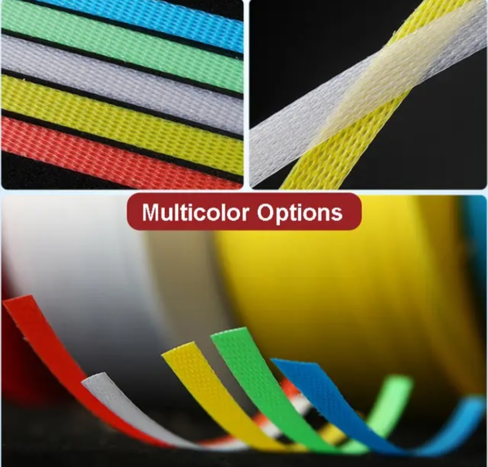
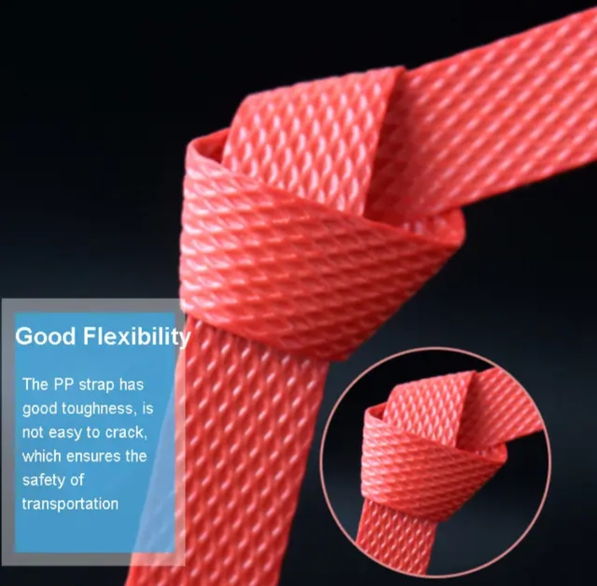
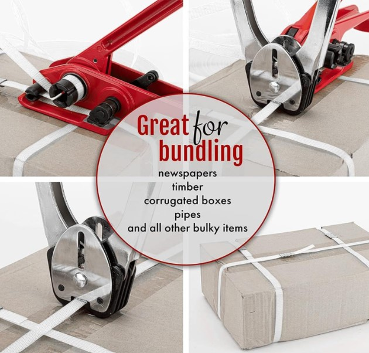
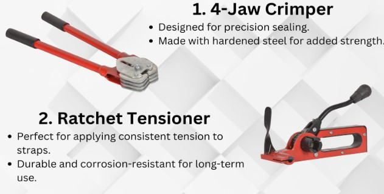
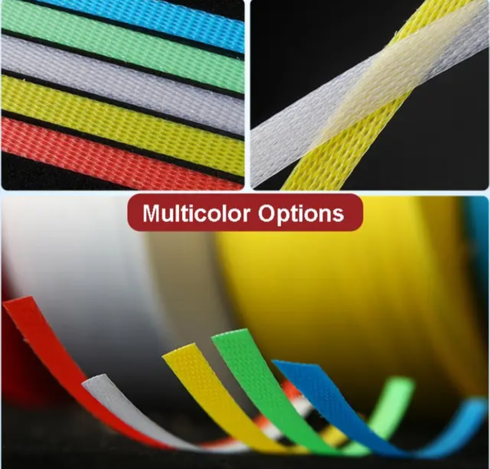
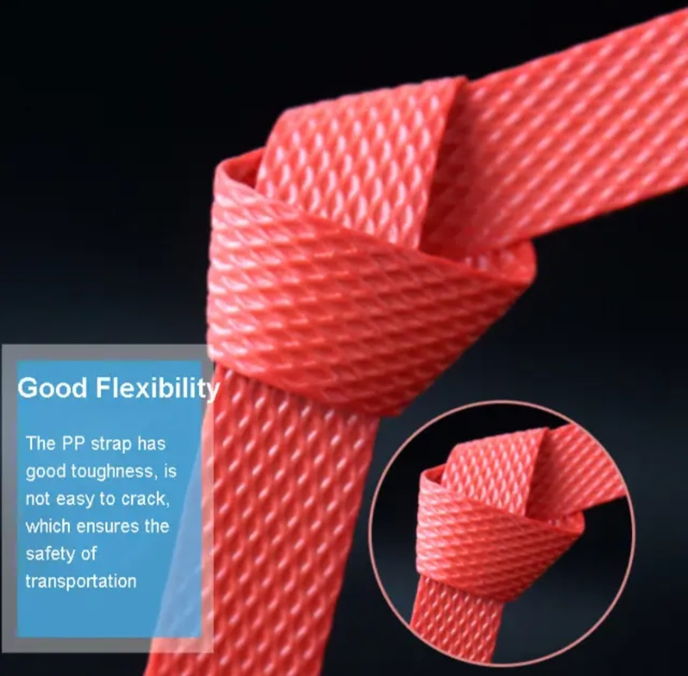
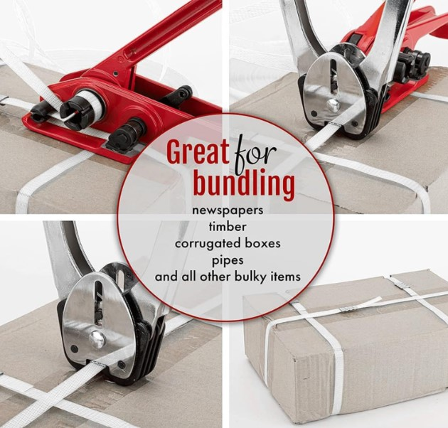
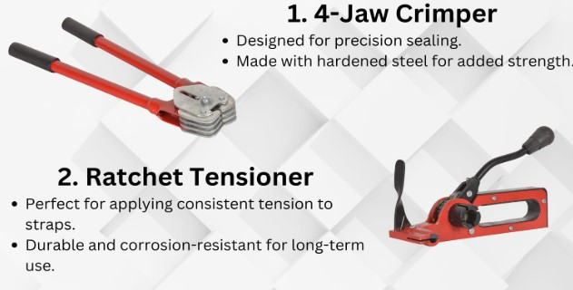
 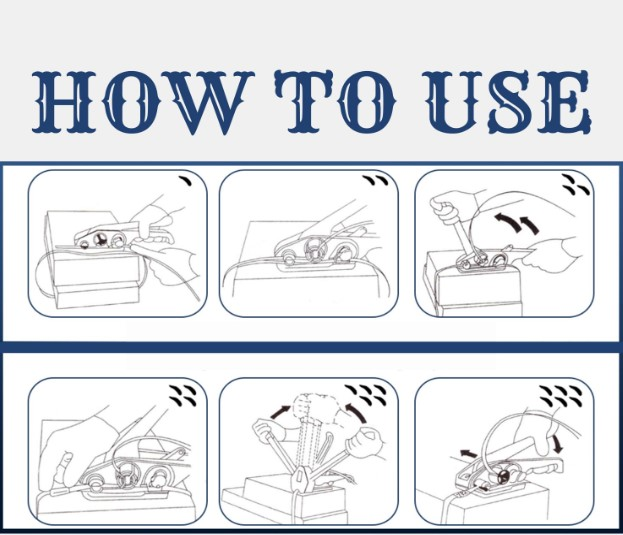
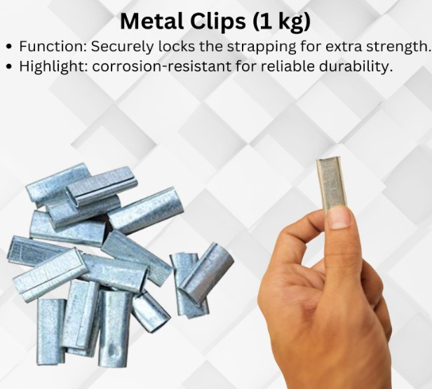
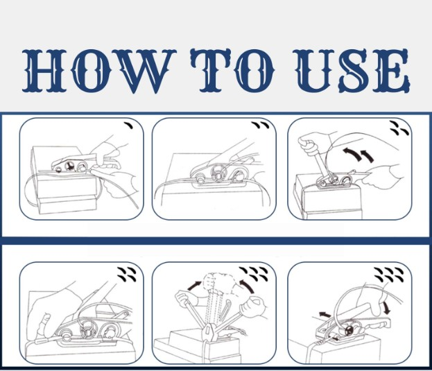
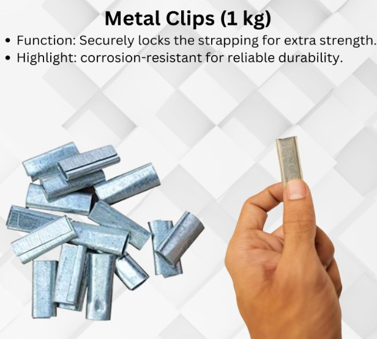